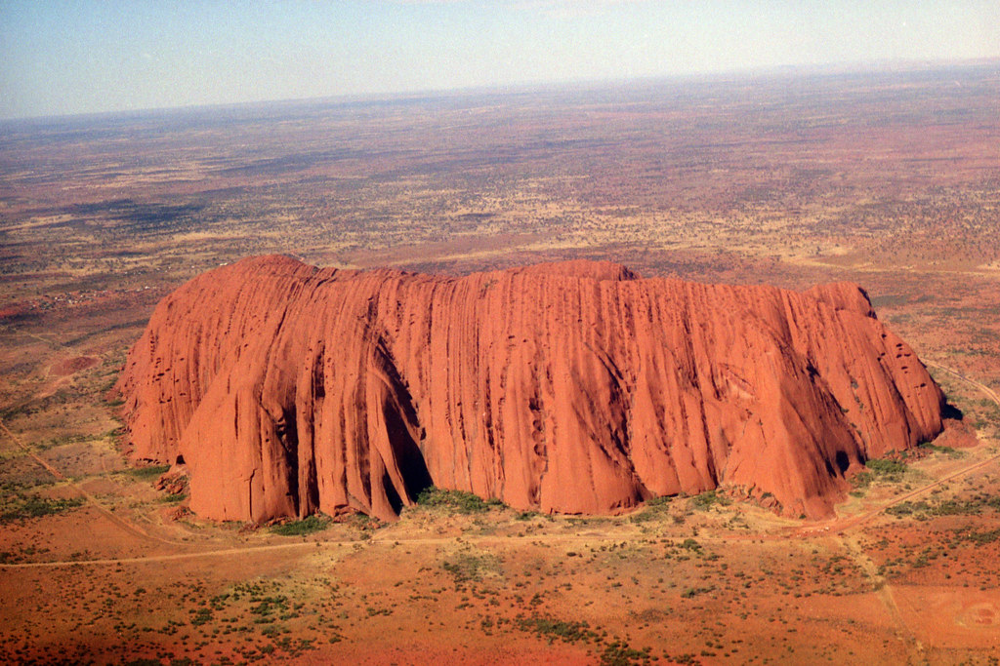
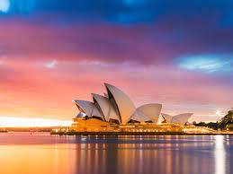
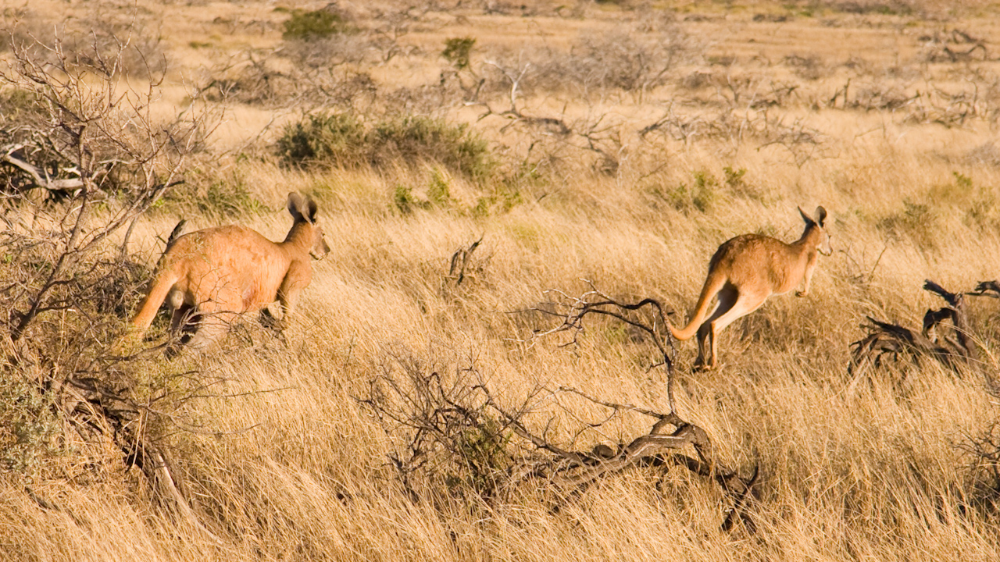
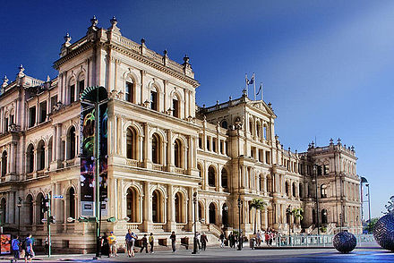
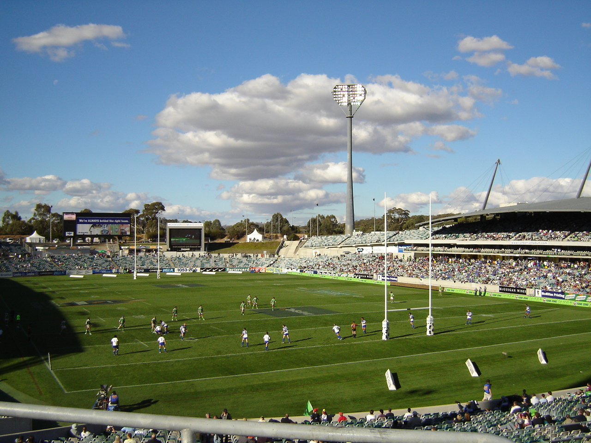
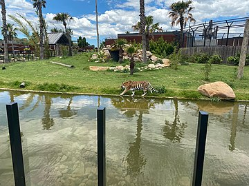
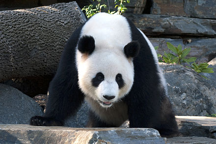
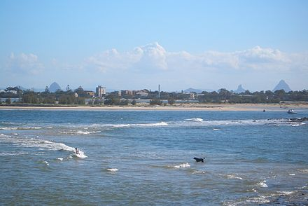
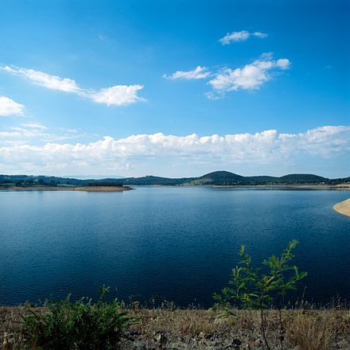

Best Places to Visit in Australia
- Uluru - Uluru is one of Australia's most recognisable
landmarks and has been a popular tourist destination since the late 1930s.

- Sydney Opera House - The Sydney Opera House is a performing arts
center at Sydney Harbour located in Sydney, New South Wales.

- The Outback - The Outback is a vast, sparsely populated
area of Australia.

- Brisbane - Brisbane has retained many heritage buildings, some of which date back to the 1820s, including The Old Windmill in Wickham Park which is
the oldest surviving building in Brisbane, and the Commissariat Store on William Street.

- Tasmania - The Tasmanian devil is the largest carnivorous marsupial in the world and is
now found in the wild only in Tasmania.

- Canberra - Canberra has a number of sporting teams that compete in national and international competitions.
The best known teams are the Canberra Raiders and the Brumbies; both have been champions of their leagues.

- Sydney Zoo - Sydney Zoo is a zoo in Bungarribee in the Western Sydney Parklands, in Greater Western Sydney, New South Wales.
Sydney Zoo is a member of the Zoos and Aquariums Association of Australia and New Zealand.

- Adelaide Zoo - Adelaide Zoo is Australia's second oldest zoo, and it is operated on a non-profit basis.
It is located in the parklands just north of the city centre of Adelaide, South Australia.

- Sunshine Coast - Several stretches of the Sunshine Coast are lined with unbroken beaches. Notable beaches include: Noosa Main Beach,
Sunshine Beach, Sunrise Beach, and Castaways Beach.

- Melbourne - Melbourne is the second most visited city in Australia and the seventy-third most visited city in the world.
In 2018, 10.8 million domestic overnight tourists and 2.9 million international overnight tourists visited Melbourne.
